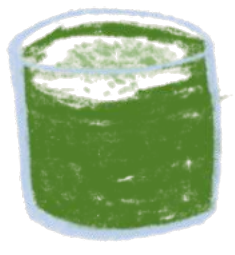
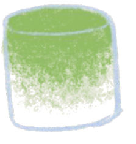
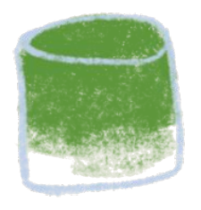
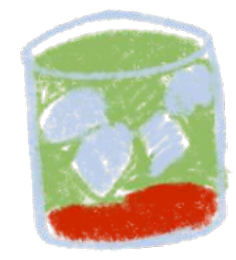
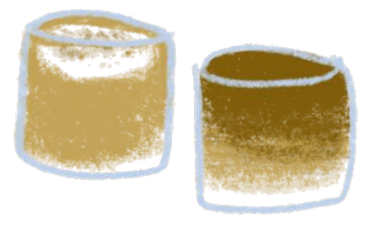
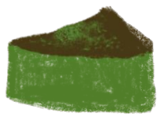

Specialty matcha + hojicha, 9AM–2PM daily. Our menu changes with the tea, the seasons + whatever we're excited about right now.
Grean's signature ceremonial blend matcha, a rich Saemidori and Okumidori cultivar traditionally stone ground from Nishio, Aichi in Japan. All drinks come iced, no oat milk charge.





We offer two distinct hojicha (roasted matcha). 100% handpicked green tea leaves, roasted over white charcoal in Uji & Yame.

Grean's signature in-house bakes and pastries.
Thoughtfully crafted matcha drinks featuring intentionally sourced teas from our partner farms throughout Japan. We make every syrup in-house.